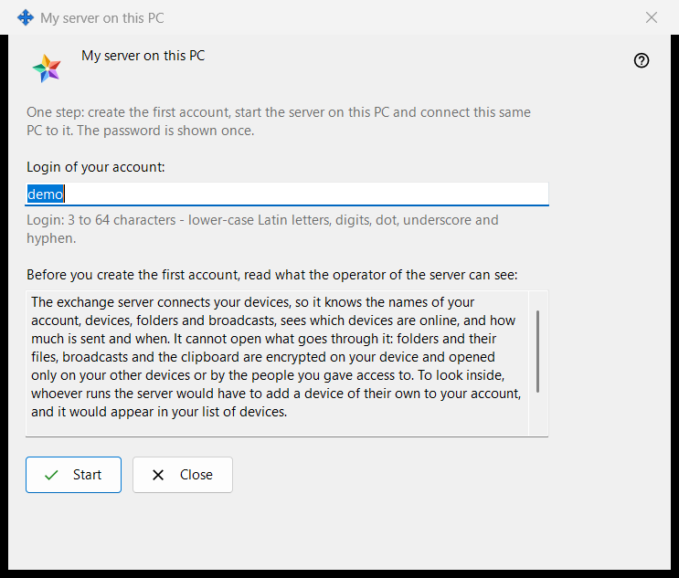
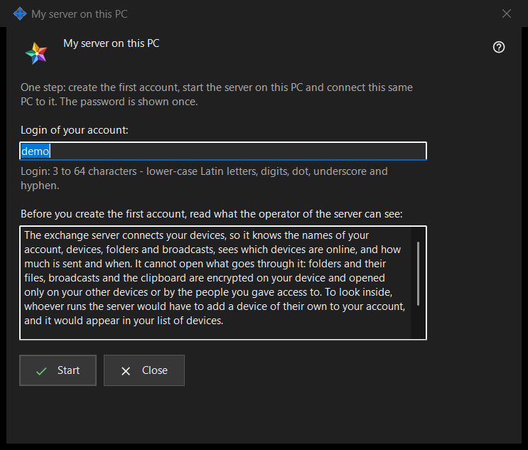

My server on this PC
What this is for
Sets up a personal Media Exchange Server on this PC in one pass: it creates the first account, starts the server and connects this same PC to it. It opens from the 'Use this PC as my server..' button on the Media Exchange Server page of the Share Manager settings, which is drawn only while no server is set up on this PC.


In this order
- Check the suggested login, taken from your Windows user name, or type your own.
- Read the statement of what the operator can see.
- Press 'Start' and wait for the four steps.
- Copy the password at once, then the fingerprint or the connection string for your other devices.
- Press 'Close'.
The elements
Login
'Login of your account:' takes 3 to 64 characters: lower-case Latin letters, digits, dot, underscore and hyphen; capitals are folded to lower case. The hint under the field turns to the warning colour while the text cannot be a login, and 'Start' does nothing until it can.
What the operator can see
The read-only box under 'Before you create the first account, read what the operator of the server can see:' lists what a server operator can see about accounts, devices, folders, broadcasts and the clipboard, what the server cannot read, and how many days logs are kept. On your own server you are the operator.
Steps and failures
'Start' runs four steps and names the current one: 'Creating the account..', 'Starting the server..', 'Checking the certificate..' and 'Connecting this PC..'. The login is locked and the window cannot be closed meanwhile. If no account was made, a sentence says why, for example 'That account already exists - choose another login.'; fix the login and press 'Start' again.
Result and addresses
On success the window says 'Done: the server is running, the account is created and this PC is connected to it.' and lists 'Address for this PC:', 'Address for other devices:' (it reads 'not set - enter it in the exchange server's settings' until that address is set), 'Login:', 'Password (shown once):' and 'Certificate fingerprint:'. Once the address for other devices is set, 'Connection string:' is added. If the server did not start, the account still exists and its password is shown once below.
Password and copying
The password is masked. 'Show password' reveals it; 'Copy password' puts it on the clipboard by the protected route that keeps it out of the Windows clipboard history and the cloud clipboard. The window shows it only this once, unless 'Keep account passwords on this PC' is on. 'Copy fingerprint' and 'Copy the string' are plain copies: neither holds a password. Other devices need the address, login, password and fingerprint, which they compare on first connection.
Closing
If the password was neither copied, nor shown, nor kept on this PC, 'Close' asks 'Close without copying the password?' with No as the default, because the password cannot be shown again, only reset.
Manager settings · SFTP sharing settings · Exchange server settings